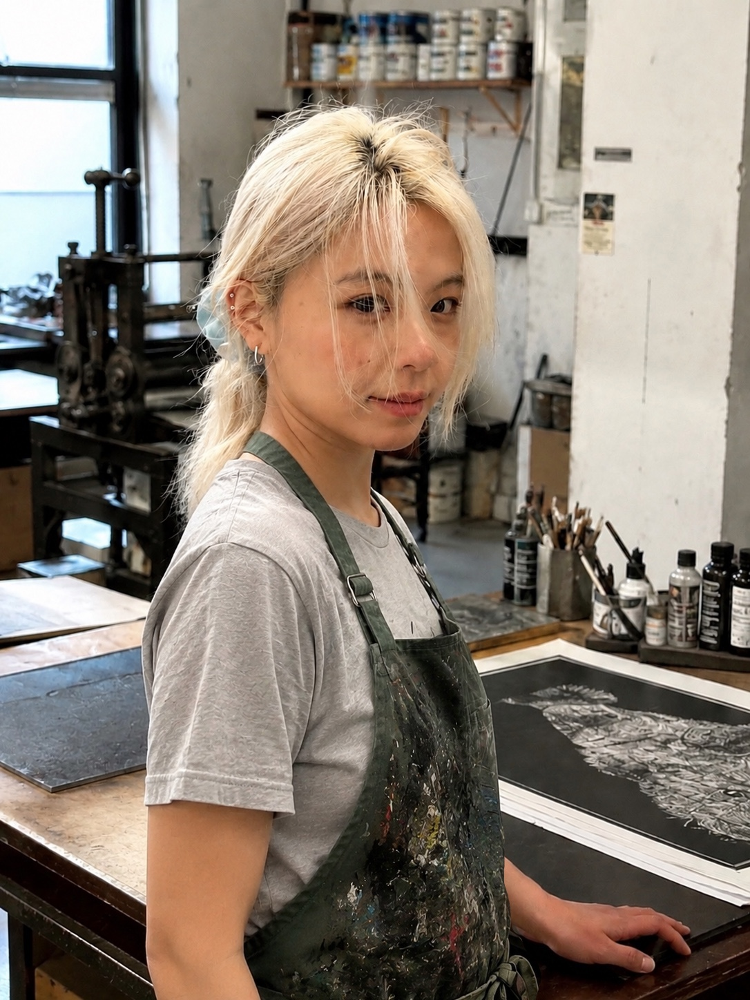

Artist Statement
My practice explores the relationship between the body, material and traces of presence. Working across printmaking, sculpture, ceramics and fibre, I use materials as both physical substances and carriers of memory, intimacy and cultural meaning.
Hair has become an important material in my practice because it exists between the body and the outside world. It can function as an extension of the body, while also remaining as a trace after the body has disappeared. Through hair, skin-like surfaces, imprints and fragments, I explore how the body can be constructed, restrained, remembered and transformed.
My work is concerned with presence and absence, bodily identity and the ways in which personal experience is embedded within materials and everyday objects. I am interested in the space between the intimate and the cultural, where materials can carry both personal memory and wider histories of migration, gender and cultural translation.
Bio
Fanzhi Wei is a Chinese artist based in London, working across printmaking, sculpture, fibre and ceramics. Her practice investigates the relationship between the body, material and traces of presence.
Working with intimate and tactile materials including hair, thread, fabric, ceramic and printmaking media, Wei explores bodily identity, absence, memory and cultural transformation.
Education
CV
For a full list of exhibitions, education, professional experience and selected projects, please see my CV.
View CV →